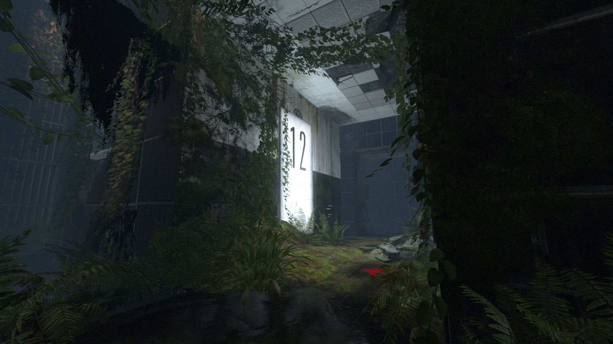

The communication process begins at the user end, or Judy in this case where the DNS entry of Bob is entered into the H.323 compatible program. This DNS entry could be either an email or a user name depending on the application. The DNS’s function is to receive the Domain Name System entry generated by the VoIP application. This step is known as the DNS resolve, and is required for Judy’s computer to obtain Bob’s actual IP address as it is not publicly available (Bhatia et al. 2006).
The IP address obtained is used to send a direct H.225 message to Bob that requests a connection. If Bob were to accept the request, an H.225 message is sent back to Judy’s end to verify that the connection has been established. An H.245 negotiation process between the two user and the receiving ends begins which leads to the opening of the logical channels which allows both users to exchange voice signals through packet based network (Bhatia et al. 2006).
Here is a code snippet:
ls -a -s >> main.out | grep 'Desktop'
mv main.out ~/scripts/output
Here is a terminal snippet:
This is a divider:
This is a filled and an outlined button:
End of demonstration!